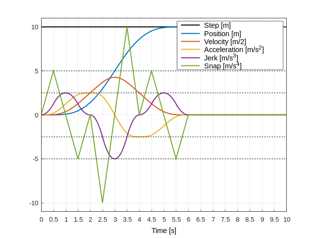

Theory inside nested-shaper¶
Definitions of Convolution¶
The Convolution Theorem¶
Step and SMA function in frequency domain¶
Step function, defined by
SMA function, defined by
Heaviside unit step, defined by
Laplace transforms used in this theory¶
Step function with nested SMA.¶
Based on the convolution theorem, we apply nested SMAs(total n) on step function. $$ R(s)=U(s)\text{SMA}_1(s)\text{SMA}_2(s)\cdots\text{SMA}_n(s) $$
If SMAs have same amplitude,
Apply inverse laplace transform on (7), in case of all SMAs have same amplitude, for simplicity.
Let's investigate first Heaviside section.
And we can prove important characteristics about derivatives.
(10) implies the derivative of results, is always smaller than initial amplitude / nested SMA's amplitude.
If we generalize the results in case of SMAs have different amplitude, and first sections,
Here is an example, step input with 10.0,
applied with 5 filters,
SMA amplitude with 2.0s, 2.0s, 1.0s, 0.5s, 0.50

You can see that, (first section, see t < 2.0s)
Velocity <= 10.0 / 2.0 = 5.0
Acceleration <= 10.0 / (2.0*2.0) = 2.5
Jerk <= 10.0 / (2.0*2.0*1.0) = 2.5
snap <= 10.0 / (2.0*2.0*1.0*0.5) = 5.0
Implementation details about SMA¶
The mean over last N data-points calculated as
Iterating all over the N data points is computationally expensive. However, averaging all data at each time will provide a numerically stable results in long time calculation. Other way to calculate SMA is (called as recursive/cumulative),
Calculating SMA by cumulative method suffers from numerical error on long time operation. In order to minimize numerical error, i implemented Kahan summation algorithm.
averaging angles.¶
What if samples are on the different algebra space? For example, we should use circular mean for angle.